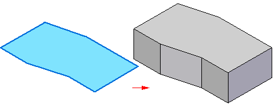
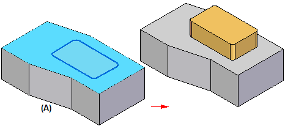
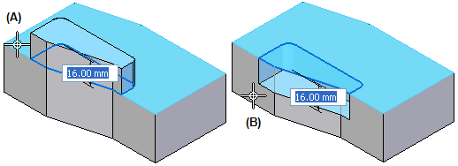

Extrude command (synchronous)
Use the Extrude command  to add or remove material from a part by extruding sketch elements along a linear vector.
to add or remove material from a part by extruding sketch elements along a linear vector.
When constructing the base feature, the sketch elements must form a closed sketch region.

When constructing additional features, regardless of whether they add or remove material, you can use an open sketch, planar face, or a closed sketch region. When using a sketch region, it can consist entirely of sketch elements (A) or can be a combination of sketch elements and model edges (B).


For removing material in a multi-body model, see Help topic Multi-body cut.
When constructing additional features, you can define whether material is added or removed by cursor position while constructing the feature, or by setting options on the command bar. For example, when the Automatic option is set, when you position the cursor above the sketch plane (A), material is added. If you position the cursor below the sketch plane, material is removed (B).

You can also construct extruded features using the Select command on the Home tab.
How do I
Construct a protrusion or cutout (ordered)Define the extent of an extruded feature
Construct a base feature
Construct a cutout (ordered)
Construct a hole
Construct a hole (ordered)
Construct a hole on a cylinder
Construct an extrusion: base feature
Construct an extrusion or cutout: subsequent features
Construct a protrusion or cutout: model face
Construct a Normal Protrusion
Construct a Normal Cutout (Part Environment)
Finish the Feature
Examples: Constructing Protrusions With the Finite Option
Examples: Constructing Protrusions With the Through All Option
Examples: Constructing Protrusions With the Through Next Option
Examples: Constructing Cutouts With the Through All Option
Examples: Constructing Cutouts With the Through Next Option
Examples: Constructing Cutouts With the Finite Option
Learn more
Part modeling workflow overviewPart modeling: Tips for getting started
Look up more details
Extrude command bar (synchronous)Extrude command (ordered)
Extrude command bar (ordered)
Cut command
Cut command bar
Demo: Create protrusion or cutout using keypoint
Normal Protrusion command
Normal Protrusion command bar
Normal Cutout command (Part environment)
Normal Cutout command bar (Part environment)